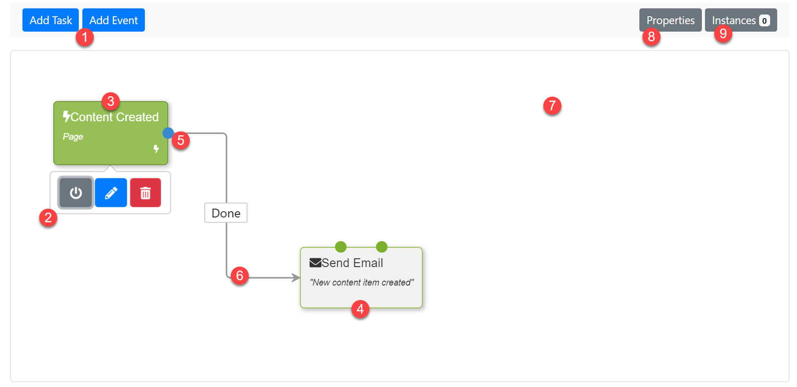

Workflows (OrchardCore.Workflows)
工作流程（OrchardCore.Workflows）
The Workflows module provides a way for users to visually implement business rules using flowchart diagrams.
Workflows模块为用户提供了一种使用流程图可视地实现业务规则的方法。
General Concepts
一般概念
A workflow is a collection of activities that are connected to eachother. These connections are called transitions.
工作流程是活动的集合，它们彼此连接。这些连接称为转换。
Activities and their transitions are stored in a Workflow Definition.
活动及其转换存储在工作流定义中。
A workflow is essentially a visual script, where each activity is a statement of that script.
工作流本质上是一个可视脚本，其中每个活动都是该脚本的声明。
There are two types of activities: Task and Event.
有两种类型的活动：任务和事件。
A Task activity typically performs an action, such as publishing a content item, while an Event activity typically listens for an event to happen before execution continues.
Task活动通常执行操作，例如发布内容项，而Event活动通常在执行继续之前侦听事件。
In order for a workflow to execute, at least one activity must be marked as the start of the workflow. Only Event activities can be marked as the start of a workflow. An example of such an event activity is Content Created, which executes whenever a content item is created.
为了执行工作流，必须至少将一个活动标记为工作流的开始。只有事件活动才能标记为工作流程的开始。此类事件活动的一个示例是_Content Created_，它在创建内容项时执行。
A workflow can have more than one start event. This allows you to trigger (run) a workflow in response to various types of events.
工作流可以有多个启动事件。这允许您触发（运行）工作流以响应各种类型的事件。
Each activity has one or more outcomes, which represent a source endpoint from which a connection can be made to the next activity, which are called transitions.
每个活动都有一个或多个结果，它们代表一个源端点，从该端点可以与下一个活动建立连接，称为转换。
By connecting activities, you are effectively creating a program that can be executed by Orchard in response to a multitude of events.
通过连接活动，您可以有效地创建一个程序，可以由Orchard执行以响应多个事件。

- Activity Picker (Task / Event)
1.活动选择器（任务/事件）
- Activity actions (click an activity to display activity actions)
2.活动操作（单击活动以显示活动操作）
- An activity configured as the starting activity of the workflow.
3.配置为工作流的起始活动的活动。
- An activity.
4.一项活动。
- An Outcome ("Done") of an activity.
5.活动的结果（“完成”）。
- A transition between two activities (from "Content Created" via the "Done" outcome to the "Send Email" activity).
6.两个活动之间的转换（从“创建内容”到“完成”结果到“发送电子邮件”活动）。
- The workflow editor design surface.
7.工作流编辑器设计表面。
- Edit the workflow definition properties (Name, Enabled, etc.)
8.编辑工作流定义属性（名称，已启用等）
- List the workflow instances for this workflow definition.
9.列出此工作流定义的工作流实例。
Vocabulary
词汇
When working with Orchard Workflows, you will encounter the following terms:
使用Orchard Workflows时，您将遇到以下术语：
Workflow Definition
工作流定义
A document (as in a "document-DB" document) that contains all the necessary information about a workflow, such as its name, whether it's enabled or not, its set of activities and their transitions.
一个文档（如“document-DB”文档中），其中包含有关工作流的所有必要信息，例如其名称，是否已启用，其活动集及其转换。
Workflow Instance
工作流程实例
A document that represents an "instance" of a workflow definition. A workflow instance contains runtime-state of a workflow. Whenever a workflow is started, a new workflow instance is created of a given workflow definition.
表示工作流定义的“实例”的文档。工作流实例包含工作流的运行时状态。每当启动工作流时，都会创建给定工作流定义的新工作流实例。
Activity
活动
A step in a workflow definition. An activity performs an action and provides zero or more outcomes, which are used to connect to the next activity to execute. There are two types of activities: Task and Event.
工作流定义中的一个步骤。活动执行操作并提供零个或多个结果，用于连接到要执行的下一个活动。有两种类型的活动：任务和事件。
Task
任务
A specialized type of activity. Tasks perform actions such as sending emails, publishing content and making HTTP requests.
一种特殊类型的活动。任务执行诸如发送电子邮件，发布内容和发出HTTP请求等操作。
Event
事件
A specialized type of activity. Like tasks, events can perform actions, but typically all they do is halt the workflow, awaiting for an event to happen before continuing on to the next activity. When an event is configured as the starting activity of a workflow, that workflow is started when that event is triggered.
一种特殊类型的活动。与任务类似，事件可以执行操作，但通常他们所做的只是停止工作流，等待事件发生，然后继续下一个活动。将事件配置为工作流的启动活动时，将在触发该事件时启动该工作流。
Workflow Editor
工作流编辑器
An editor that allows you to create and manage a workflow definition using a drag & drop visual interface.
一种编辑器，允许您使用拖放可视界面创建和管理工作流定义。
Activity Editor
活动编辑器
Most activities expose settings that can be configured via the activity editor. To configure an activity, you can either double-click an activity on the design surface of the workflow editor, or click an activity once to activate a small popup that provides various actions you can perform on an activity. One of these actions is the Edit action.
大多数活动都会公开可以通过活动编辑器配置的设置。要配置活动，您可以双击工作流编辑器设计图面上的活动，也可以单击活动一次以激活一个小弹出窗口，该弹出窗口提供您可以对活动执行的各种操作。其中一个操作是编辑操作。
Activity Picker
活动选择器
When you are in the Workflow Editor, you use the Activity Picker to add activities to the design surface. Open the activity picker by clicking Add Task or Add Event to add a task or event, respectively.
当您在工作流程编辑器中时，可以使用活动选择器将活动添加到设计图面。单击_Add Task_或_Add Event_分别添加任务或事件，打开活动选择器。
Outcome
结果
Each activity has zero or more outcomes. When an activity has executed, it yields control back to the workflow manager along with a list of outcomes. The workflow manager uses this list of outcomes to determine which activities to execute next.
每项活动都有零个或多个结果。执行活动后，它会将控制权返回给工作流程管理器以及结果列表。工作流管理器使用此结果列表来确定接下来要执行的活动。
Although many activities support multiple outcomes, they typically return only one of them when done executing. For example, the Send Email activity has two possible outcomes: "Done" and "Failed". When the email was sent successfully, it yields "Done" as the outcome, and "Failed" otherwise.
虽然许多活动支持多种结果，但它们通常在执行时只返回其中一种。例如，_Send Email_活动有两种可能的结果：“完成”和“失败”。电子邮件成功发送后，会产生“完成”作为结果，否则“失败”。
Transition
过渡
A transition is the connection between the outcome of one activity to another activity. Transitions are created using drag & drop operations in the workflow editor.
转换是一个活动的结果与另一个活动之间的联系。使用工作流编辑器中的拖放操作创建过渡。
Workflow Manager
工作流程管理器
A service class that can execute workflows. When a workflow is executed, it takes care of creating a workflow instance which is then executed.
可以执行工作流的服务类。执行工作流时，它会负责创建随后执行的工作流实例。
Workflow Execution Context
工作流程执行上下文
When the Workflow Manager executes a workflow, it creates an object called the Workflow Execution Context. The Workflow Execution Context is a collection of all information relevant to workflow execution.
当Workflow Manager执行工作流时，它会创建一个名为Workflow Execution Context的对象。工作流程执行上下文是与工作流程执行相关的所有信息的集合。
For example, it contains a reference to the workflow instance, workflow definition, correlation values, input, output and properties.
例如，它包含对工作流实例，工作流定义，相关值，输入，输出和属性的引用。
Each activity has access to this execution context.
每个活动都可以访问此执行上下文。
Correlation
关联
Correlation is the act of associating a workflow instance with one or more identifiers. These identifiers can be anything. For example, when a workflow has the Content Created event as its starting point, the workflow instance will be associated, or rather correlated to the content item ID that was just created.
关联是将工作流实例与一个或多个_identifiers_相关联的行为。这些标识符可以是任何内容例如，当工作流将_Content Created_事件作为其起点时，工作流实例将与刚刚创建的内容项ID相关联，或者更确切地说_correlated_。
This allows long-running workflow scenarios where only workflow instances associated with a given content item ID are resumed.
这允许长时间运行的工作流场景，其中仅恢复与给定内容项ID相关联的工作流实例。
Input
输入
When a workflow is executed, the caller can provide input to the workflow instance. This input is stored in the Input dictionary of the workfow execution context.
执行工作流时，调用者可以向工作流实例提供输入。此输入存储在工作流执行上下文的“输入”字典中。
This is analogous to providing arguments to a function.
这类似于为函数提供参数。
Output
产量
When a workflow executes, each activity can provide output values to the workflow instance. This output is stored in the Output dictionary of the workfow execution context.
执行工作流时，每个活动都可以向工作流实例提供输出值。此输出存储在工作流执行上下文的“输出”字典中。
This is analogous to returning values from a function.
这类似于从函数返回值。
Properties
属性
When a workflow executes, each activity can set property values to the workflow instance. These properties are stored in the Properties dictionary of the workfow execution context.
当工作流执行时，每个活动都可以将属性值设置为工作流实例。这些属性存储在工作流执行上下文的“属性”字典中。
Each activity can set and access these properties, allowing a workflow to compute and retrieve information that can then be processed by other activities further down the chain.
每个活动都可以设置和访问这些属性，允许工作流计算和检索信息，然后可以由链中的其他活动处理。
This is analogous to a function setting local variables.
这类似于设置局部变量的函数。
Workflow Execution
工作流程执行
When a workflow executes, the Workflow Manager creates a Workflow Instance and a Workflow Execution Context. A workflow instance maintains state about the execution, such as which activity to execute next and state that can be provided by individual activities.
当工作流程执行时， Workflow Manager 会创建工作流程实例和工作流程执行上下文。工作流实例维护有关执行的状态，例如下一个要执行的活动以及可以由各个活动提供的状态。
A Workflow Instance is ultimately persisted in the underlying data storage provider, while a Workflow Execution Context exists only in memory for the duration of a workflow execution.
工作流实例最终保留在基础数据存储提供程序中，而工作流执行上下文仅在工作流执行期间存在于内存中。
Workflows can be short-running as well as long-running.
工作流程可以短期运行以及长期运行。
Short-running workflows
短期运行的工作流程
When a workflow executes without encountering any blocking activities (i.e. activities that wait for an event to occur, such as Signal), the workflow will run to completion in one go.
当工作流执行时没有遇到任何阻塞活动（即等待事件发生的活动，例如_Signal_），工作流将一次完成运行。
Long-running workflows
长期运行的工作流程
When a workflow executes and encounters a blocking activity (such as an event), the workflow manager will halt execution and persist the workflow instance to the underlying persistence layer.
当工作流执行并遇到阻塞活动（例如事件）时，工作流管理器将_halt_执行并将工作流实例持久保存到基础持久层。
When the appropriate event is triggered (which could happen seconds, days, weeks or even years from now), the workflow manager will load the workflow instance from storage and resume execution.
当触发适当的事件（可能在几秒，几天，几周甚至几年后发生）时，工作流管理器将从存储加载工作流实例并继续执行。
Scripts and Expressions
脚本和表达式
Many activities have settings that can contain either JavaScript or Liquid syntax.
许多活动的设置可以包含 JavaScript 或 Liquid 语法。
For example, when adding the Notify activity, its editor shows the folling fields:
例如，在添加 Notify 活动时，其编辑器会显示以下字段：
These type of fields allow you to enter Liquid markup, enabling access to system-wide variables and filters as well as variables from the workflow execution context.
这些类型的字段允许您输入Liquid标记，允许访问系统范围的变量和过滤器以及工作流程执行上下文中的变量。
JavaScript Functions
JavaScript函数
The following JavaScript functions are available by default to any activity that supports script expressions:
默认情况下，以下JavaScript函数可用于支持脚本表达式的任何活动：
| Function | Description | Signature |
|功能|说明|签名|
| -------- | ----------- | --------- |
| -------- | ----------- --------- |
| workflow | Returns the WorkflowExecutionContext which provides access to all information related to the current workflow execution context. | workflow(): WorkflowExecutionContext |
|工作流程|返回WorkflowExecutionContext，它提供对与当前工作流执行上下文相关的所有信息的访问。 | workflow（）：WorkflowExecutionContext |
| workflowId | Returns the unique workflow ID. | workflowId(): string |
| workflowId |返回唯一的工作流ID。 | workflowId（）：string |
| input | Returns the input parameter with the specified name. Input to the workflow is provided when the workflow is executed by the workflow manager. | input(name: string): any |
|输入|返回具有指定名称的输入参数。当工作流程由工作流程管理器执行时，将提供对工作流程的输入。 | input（name：string）：any |
| output | Sets an output parameter with the specified name. Workflow output can be collected by the invoker of the workflow. | output(name: string, value: any): void |
|输出|设置具有指定名称的输出参数。工作流输出可以由工作流的调用者收集。 | output（name：string，value：any）：void |
| property | Returns the property value with the specified name. Properties are a dictionary that workflow activities can read and write information from and to. | property(name: string): any |
|财产|返回具有指定名称的属性值。属性是工作流活动可以从中读取和写入信息的字典。 | property（name：string）：any |
| lastResult | Returns the value that the previous activity provided, if any. | lastResult(): any |
| lastResult |返回上一个活动提供的值（如果有）。 | lastResult（）：any |
| correlationId | Returns the correlation value of the workflow instance. | correlationId(): string |
| correlationId |返回工作流实例的相关值。 | correlationId（）：string |
| signalUrl | Returns workflow trigger URL with a protected SAS token into which the specified signal name is encoded. Use this to generate URLs that can be shared with trusted parties to trigger the current workflow if it is blocked on the Signal activity that is condifured with the same signal name. | signalUrl(signal: string): string |
| signalUrl |返回工作流触发器URL，其中包含受保护的SAS令牌，其中编码指定的信号名称。使用此选项可生成可与受信任方共享的URL，以触发当前工作流（如果在使用相同信号名称编号的Signal活动上被阻止）。 | signalUrl（signal：string）：string |
Liquid Expressions
液体表达
The following Liquid tags, properties and filters are available by default to any activity that supports Liquid expressions:
默认情况下，以下Liquid标签，属性和过滤器可用于支持Liquid表达式的任何活动：
| Expression | Type | Description | Example |
|表达|输入|说明|示例|
| ---------- | ---- | ----------- | ------- |
| ---------- | ---- | ----------- ------- |
| Workflow.CorrelationId | Property | Returns the correlation value of the workflow instance. | {{ Workflow.CorrelationId }} |
| Workflow.CorrelationId |财产|返回工作流实例的相关值。 | {{Workflow.CorrelationId}}|
| Workflow.Input | Property | Returns the Input dictionary. | {{ Workflow.Input["ContentItem"] }} |
| Workflow.Input |财产|返回Input字典。 | {{Workflow.Input [“ContentItem”]}}|
| Workflow.Output | Property | Returns the Output dictionary. | {{ Workflow.Output["SomeResult"] }} |
| Workflow.Output |财产|返回输出字典。 | {{Workflow.Output [“SomeResult”]}}|
| Workflow.Properties | Property | Returns the Properties dictionary. | {{ Workflow.Properties["Foo"] }} |
| Workflow.Properties |财产|返回Properties字典。 | {{Workflow.Properties [“Foo”]}}|
Instead of using the indexer syntax on the three workflow dictionaries Input, Output and Properties, you cal also use dot notation, e.g.:
而不是在三个工作流词典Input，Output和Properties上使用索引器语法，你也可以使用点表示法，例如：
{{ Workflow.Input.ContentItem }}
<font color=#0099ff size=4 face="黑体">{{Workflow.Input.ContentItem}}</font>
Liquid Expressions and ContentItem Events
Liquid Expressions和ContentItem事件
When handling content related events using a workflow, the content item in question is made available to the workflow via the Input dictionary.
当使用工作流处理内容相关事件时，所讨论的内容项通过“输入”字典提供给工作流。
For example, if you have a workflow that starts with the Content Created Event activity, you can send an email or make an HTTP request whereand reference the content item from fieldsliquid-ebabled fields as follows:
例如，如果您的工作流程以 Content Created Event 活动开头，则可以发送电子邮件或发出HTTP请求，并在fieldsliquid-ebabled字段中引用内容项，如下所示：
{{ Workflow.Input.ContentItem | display_url }}
<font color=#0099ff size=4 face="黑体">{{Workflow.Input.ContentItem | display_url}}</font>
{{ Workflow.Input.ContentItem | display_text }}
<font color=#0099ff size=4 face="黑体">{{Workflow.Input.ContentItem | display_text}}</font>
{{ Workflow.Input.ContentItem.DisplayText }}
<font color=#0099ff size=4 face="黑体">{{Workflow.Input.ContentItem.DisplayText}}</font>
For more examples of supported content item filters, see documention on Liquid .
有关受支持的内容项过滤器的更多示例，请参阅[Liquid]上的文档（https://orchardcore.readthedocs.io/en/latest/OrchardCore.Modules/OrchardCore.Liquid/README/）。
Activities out of the box
开箱即用的活动
The following activities are available with any default Orchard installation:
任何默认的Orchard安装都可以使用以下活动：
| Activity | Type | Description | Documentation |
|活动|输入|说明|文档|
| -------- | ---- | ----------- | ------------- |
| -------- | ---- | ----------- ------------- |
| Workflows | * | * | * |
| 工作流程 | * | * | * |
| Correlate | Task | Correlate the current workflow instance with a value. | [link] |
|相关|任务|将当前工作流实例与值相关联。 | [链接] |
| For Each | Task | Iterate over a list. | [link] |
|每个|任务|迭代一个列表。 | [链接] |
| Fork | Task | Fork workflow execution into separate paths of execution. | [link] |
|叉|任务|将工作流执行分成独立的执行路径。 | [链接] |
| For Loop | Task | Iterates for N times. | [link] |
| For Loop |任务|迭代N次。 | [链接] |
| If / Else | Task | Evaluate a boolean condition and continues execution based on the outcome. | [link] |
|如果/ Else |任务|评估布尔条件并根据结果继续执行。 | [链接] |
| Join | Task | Join a forked workflow execution back into a single path of execution. | [link] |
|加入|任务|将分叉的工作流程执行重新加入到单个执行路径中。 | [链接] |
| Log | Task | Write a log entry. | [link] |
|记录|任务|写一个日志条目。 | [链接] |
| Notify | Task | Display a notification. | [link] |
|通知|任务|显示通知。 | [链接] |
| Script | Task | Execute script and continue execution based on the returned outcome. | [link] |
|脚本|任务|执行脚本并根据返回的结果继续执行。 | [链接] |
| Set Output | Task | Evaluate a script expression and store the result into the workflow's output. | [link] |
|设置输出|任务|评估脚本表达式并将结果存储到工作流的输出中。 | [链接] |
| Set Property | Task | Execute script and continue execution based on the returned outcome. | [link] |
|设置属性|任务|执行脚本并根据返回的结果继续执行。 | [链接] |
| While Loop | Task | Iterate while a condition is true. | [link] |
|而Loop |任务|在条件成立时迭代。 | [链接] |
| HTTP Workflow Activities | * | * | * |
| HTTP工作流程活动 | * | * | * |
| HTTP Redirect | Task | Redirect the user agent to the specified URL (301/302). | [link] |
| HTTP重定向|任务|将用户代理重定向到指定的URL（301/302）。 | [链接] |
| HTTP Request | Task | Perform a HTTP request to a given URL. | [link] |
| HTTP请求|任务|对给定的URL执行HTTP请求。 | [链接] |
| Filter Incoming HTTP Request | Event | Executes when the specified HTTP request comes in. Similar to an MVC Action Filter. | [link] |
|过滤传入的HTTP请求|活动|在指定的HTTP请求进入时执行。类似于MVC操作过滤器。 | [链接] |
| Signal | Event | Executes when a signal is triggered. | [link] |
|信号|活动|触发信号时执行。 | [链接] |
| Email | * | * | * |
| 电子邮件 | * | * | * |
| Send Email | Task | Send an email. | [link] |
|发送电子邮件|任务|发送电子邮件。 | [链接] |
| Timer Workflow Activities | * | * | * |
| 定时器工作流程活动 | * | * | * |
| Timer | Event | Executes repeatedly according to a specified CRON expression. | [link] |
|定时器|活动|根据指定的CRON表达式重复执行。 | [链接] |
| Contents | * | * | * |
| 内容 | * | * | * |
| Content Created | Event | Executes when content is created. | [link] |
|内容创建|活动|创建内容时执行。 | [链接] |
| Content Deleted | Event | Executes when content is deleted. | [link] |
|内容已删除|活动|删除内容时执行。 | [链接] |
| Content Published | Event | Executes when content is published. | [link] |
|内容发布|活动|发布内容时执行。 | [链接] |
| Content Updated | Event | Executes when content is updated. | [link] |
|内容更新|活动|更新内容时执行。 | [链接] |
| Content Versioned| Event | Executes when content is versioned. | [link] |
|内容版本|活动|在内容版本化时执行。 | [链接] |
| Create Content | Task | Create a content item. | [link] |
|创建内容|任务|创建内容项。 | [链接] |
| Delete Content | Task | Delete a content item. | [link] |
|删除内容|任务|删除内容项。 | [链接] |
| Publish Content | Task | Publish a content item. | [link] |
|发布内容|任务|发布内容项。 | [链接] |
Walkthroughs
演练
Developing Custom Activities
开发自定义活动
Orchard is built to be extended, and the Workflows module is no different. When creating your own module, you can develop custom workflow activities. Developing custom activities involve the following steps:
Orchard是为扩展而构建的，Workflows模块也不例外。创建自己的模块时，您可以开发自定义工作流程活动。开发自定义活动涉及以下步骤：
- Create a new class that directly or indirectly implements
IActivity. In most cases, you either derive fromTaskActivityorEventActivity, depending on whether your activity represents an event or not. Although not required, it is recommended to keep this class in a folder called Activities.
1.创建一个直接或间接实现“IActivity”的新类。在大多数情况下，您可以从“TaskActivity”或“EventActivity”派生，具体取决于您的活动是否代表某个事件。虽然不是必需的，但建议将此类保存在名为 Activities 的文件夹中。
- Create a new display driver class that directly or indirectly implements
IDisplayDriver. An activity display driver controls the activity's display on the workflow editor canvas, the activity picker and the activity editor. Although not required, it is recommended to keep this class in a folder called Drivers.
2.创建一个直接或间接实现IDisplayDriver的新显示驱动程序类。活动显示驱动程序控制工作流编辑器画布，活动选择器和活动编辑器上的活动显示。虽然不是必需的，但建议将此类保存在名为 Drivers 的文件夹中。
- Optionally implement a view model if your activity has properties that the user should be able to configure.
3.如果您的活动具有用户应该能够配置的属性，则可以选择实施视图模型。
- Implement the various Razor views for the various shapes provided by the driver. Although not required, it is recommended to store these files in the Views/Items folder. Note that it is required for your views to be discoverable by the display engine.
4.为驱动程序提供的各种形状实现各种Razor视图。虽然不是必需的，但建议将这些文件存储在 Views / Items 文件夹中。请注意，显示引擎可以发现您的视图。
Activity Display Types
活动显示类型
An activity has the following display types:
活动具有以下显示类型：
-
Thumbnail
-
缩略图
-
Design
-
设计
Thumbnail
缩略图
Used when the activity is rendered as part of the activity picker.
在活动作为活动选择器的一部分呈现时使用。
Design
设计
Used when the activity is rendered as part of the workflow editor design surface.
在活动作为工作流编辑器设计图面的一部分呈现时使用。
IActivity
IActivity
IActivity has the following members:
-
Name
-
名称
-
Category
-
类别
-
Properties
-
属性
-
HasEditor
-
HasEditor
-
GetPossibleOutcomes
-
GetPossibleOutcomes
-
CanExecuteAsync
-
CanExecuteAsync
-
ExecuteAsync
-
ExecuteAsync
-
ResumeAsync
-
ResumeAsync
-
OnInputReceivedAsync
-
OnInputReceivedAsync
-
OnWorkflowStartingAsync
-
OnWorkflowStartingAsync
-
OnWorkflowStartedAsync
-
OnWorkflowStartedAsync
-
OnWorkflowResumingAsync
-
OnWorkflowResumingAsync
-
OnWorkflowResumedAsync
-
OnWorkflowResumedAsync
-
OnActivityExecutingAsync
-
OnActivityExecutingAsync
-
OnActivityExecutedAsync
-
OnActivityExecutedAsync
The IEvent interface adds the following member:
IEvent接口添加以下成员：
-
CanStartWorkflow
-
CanStartWorkflow
The following is an example of a simple activity implementation that displays a notification:
以下是显示通知的简单活动实现的示例：
public class NotifyTask : TaskActivity
<font color=#0099ff size=4 face="黑体">公共类NotifyTask：TaskActivity</font>
{
<font color=#0099ff size=4 face="黑体">{</font>
private readonly INotifier _notifier;
private readonly IStringLocalizer S;
private readonly IHtmlLocalizer H;
<font color=#0099ff size=4 face="黑体"></font>
public NotifyTask(INotifier notifier, IStringLocalizer<NotifyTask> s, IHtmlLocalizer<NotifyTask> h)
{
_notifier = notifier;
<font color=#0099ff size=4 face="黑体"></font>
S = s;
H = h;
}
<font color=#0099ff size=4 face="黑体"></font>
// The technical name of the activity. Activities on a workflow definition reference this name.
public override string Name => nameof(NotifyTask);
<font color=#0099ff size=4 face="黑体"></font>
// The category to which this activity belongs. The activity picker groups activities by this category.
public override LocalizedString Category => S["UI"];
<font color=#0099ff size=4 face="黑体"></font>
// A description of this activity's purpose.
<font color=#0099ff size=4 face="黑体">//此活动目的的描述。</font>
public override LocalizedString Description => S["Display a message."];
<font color=#0099ff size=4 face="黑体"></font>
// The notification type to display.
public NotifyType NotificationType
{
get => GetProperty<NotifyType>();
set => SetProperty(value);
}
<font color=#0099ff size=4 face="黑体"></font>
// The message to display.
<font color=#0099ff size=4 face="黑体">//要显示的消息。</font>
public WorkflowExpression<string> Message
{
get => GetProperty(() => new WorkflowExpression<string>());
set => SetProperty(value);
}
<font color=#0099ff size=4 face="黑体"></font>
// Returns the possible outcomes of this activity.
public override IEnumerable<Outcome> GetPossibleOutcomes(WorkflowContext workflowContext, ActivityContext activityContext)
{
return Outcomes(S["Done"]);
}
<font color=#0099ff size=4 face="黑体"></font>
// This is the heart of the activity and actually performs the work to be done.
public override async Task<ActivityExecutionResult> ExecuteAsync(WorkflowContext workflowContext, ActivityContext activityContext)
{
var message = await workflowContext.EvaluateExpressionAsync(Message);
_notifier.Add(NotificationType, H[message]);
return Outcomes("Done");
}
}
<font color=#0099ff size=4 face="黑体">}</font>
The following is an example of a simple activity display driver:
以下是简单活动显示驱动程序的示例：
public class NotifyTaskDisplay : ActivityDisplayDriver<NotifyTask, NotifyTaskViewModel>
<font color=#0099ff size=4 face="黑体">public class NotifyTaskDisplay：ActivityDisplayDriver <NotifyTask，NotifyTaskViewModel></font>
{
<font color=#0099ff size=4 face="黑体">{</font>
protected override void EditActivity(NotifyTask activity, NotifyTaskViewModel model)
{
model.NotificationType = activity.NotificationType;
model.Message = activity.Message.Expression;
}
<font color=#0099ff size=4 face="黑体"></font>
protected override void UpdateActivity(NotifyTaskViewModel model, NotifyTask activity)
{
activity.NotificationType = model.NotificationType;
activity.Message = new WorkflowExpression<string>(model.Message);
}
}
<font color=#0099ff size=4 face="黑体">}</font>
The above code performs a simple mapping of a NotifyTask to a NotifyTaskViewModel and vice versa.
上面的代码执行“NotifyTask”到“NotifyTaskViewModel”的简单映射，反之亦然。
This simple implementation is possible because the actual creation of the necessary editor and display shapes are taken care of by ActivityDisplayDriver<TActivity, TEditViewModel>, which looks like this (modified to focus on the important parts):
这种简单的实现是可行的，因为必要的编辑器和显示形状的实际创建由ActivityDisplayDriver <TActivity，TEditViewModel>来处理，它看起来像这样（修改为专注于重要部分）：
public abstract class ActivityDisplayDriver<TActivity, TEditViewModel> : ActivityDisplayDriver<TActivity> where TActivity : class, IActivity where TEditViewModel : class, new()
<font color=#0099ff size=4 face="黑体">公共抽象类ActivityDisplayDriver <TActivity，TEditViewModel>：ActivityDisplayDriver <TActivity>其中TActivity：class，IActivity其中TEditViewModel：class，new（）</font>
{
<font color=#0099ff size=4 face="黑体">{</font>
private static string ThumbnailshapeType = $"{typeof(TActivity).Name}_Fields_Thumbnail";
private static string DesignShapeType = $"{typeof(TActivity).Name}_Fields_Design";
private static string EditShapeType = $"{typeof(TActivity).Name}_Fields_Edit";
<font color=#0099ff size=4 face="黑体"></font>
public override IDisplayResult Display(TActivity activity)
{
return Combine(
Shape(ThumbnailshapeType, new ActivityViewModel<TActivity>(activity)).Location("Thumbnail", "Content"),
Shape(DesignShapeType, new ActivityViewModel<TActivity>(activity)).Location("Design", "Content")
);
}
<font color=#0099ff size=4 face="黑体"></font>
public override IDisplayResult Edit(TActivity activity)
{
return Initialize<TEditViewModel>(EditShapeType, model =>
{
return EditActivityAsync(activity, model);
}).Location("Content");
}
<font color=#0099ff size=4 face="黑体"></font>
public async override Task<IDisplayResult> UpdateAsync(TActivity activity, IUpdateModel updater)
{
var viewModel = new TEditViewModel();
if (await updater.TryUpdateModelAsync(viewModel, Prefix))
{
await UpdateActivityAsync(viewModel, activity);
}
<font color=#0099ff size=4 face="黑体"></font>
return Edit(activity);
}
}
<font color=#0099ff size=4 face="黑体">}</font>
Notice that the shape names are derived from the activity type, effectively implementing a naming convention for the shape template names to use.
请注意，形状名称是从活动类型派生的，有效地实现了要使用的形状模板名称的命名约定。
Continuing with the NotifyTask example, we now need to create the following Razor files:
继续使用NotifyTask示例，我们现在需要创建以下Razor文件：
-
NotifyTask.Fields.Design.cshtml
-
NotifyTask.Fields.Design.cshtml
-
NotifyTask.Fields.Thumbnail.cshtml
-
NotifyTask.Fields.Thumbnail.cshtml
-
NotifyTask.Fields.Edit.cshtml
-
NotifyTask.Fields.Edit.cshtml
CREDITS
学分
jsPlumb
jsPlumb
https://github.com/jsplumb/jsplumb
https://github.com/jsplumb/jsplumb
Copyright (c) 2010 - 2014 jsPlumb, http://jsplumbtoolkit.com/
版权所有（c）2010 - 2014 jsPlumb，http：//jsplumbtoolkit.com/
License: dual-licensed under both MIT and GPLv
许可证：MIT和GPLv下的双重许可
NCrontab
NCrontab
https://github.com/atifaziz/NCrontab
https://github.com/atifaziz/NCrontab
Copyright (C) Atif Aziz
版权所有（C）Atif Aziz
License: Apache License 2.0
许可证：Apache License 2.0